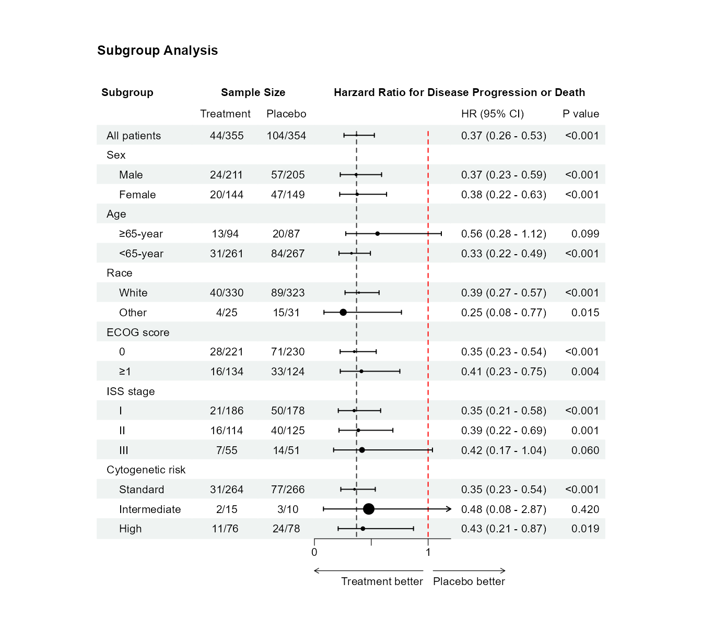

# 加载必要的包
library(tidyverse)
library(survival)
library(broom)
library(forestploter)3 森林图只会看不会画？从统计概念到R代码一次讲清楚
当我们从一张森林图中看到A、B两个亚组的结果分别是HR 0.56 (0.28 - 1.12), p = 0.099和HR 0.33 (0.22 - 0.49), p < 0.001时会怎样理解呢？结合P值自然会想到治疗药物对A亚组无效，而对B亚组是有效的。但这样解读正确吗？
3.1 关于森林图的几个基本概念
亚组通常由患者的一个或多个内在或外在因素来定义，而且应该具有一定的临床意义，例如把试验参与者按年龄分为18-65岁和≥65岁两个年龄组，或者按ECOG评分和基因突变水平分成不同的亚组1。
在不同的研究场景中，亚组分析可以评估治疗效应在不同基线特征患者中的一致性，也可以探索治疗效应在不同临床表现或基因特征患者中是否存在差异，从而找出潜在的获益人群。多数情况下，亚组分析不用于因果推断，而是描述性和探索性的，在森林图中也是如此。
生存数据的亚组分析需要用到Cox比例风险模型，风险比（Hazard Ratio, HR）是Cox模型的核心统计量，表示两组在整个随访期间的风险比值。例如在其中一个亚组内，治疗组和对照组的HR是0.33表示治疗组的风险与对照组相比下降了67%；95%置信区间0.22-0.49不跨1，可以判断两组有统计学差异。
需要注意的是Cox模型需要满足等比例风险假设，即假设两组的风险比在整个随访期间保持恒定，我们可以用survival::cox.zph()函数检验PH假设。
以上提到的HR值及相应的置信区间指的是在亚组内部治疗组与对照组的比较。那回到文章开头提出的问题，亚组A和亚组B的治疗效应之间有显著差异吗？
错误理解：亚组A的HR=0.56 (P=0.099)，亚组B的HR=0.33 (P<0.001)，只有亚组B的P值小于0.05，因此治疗药物对亚组A无效，而对亚组B有效。
正确理解：必须看交互P值。只有交互P<0.05，才能说疗效在亚组间是有差异的。
还有一个值得考虑的问题是亚组分析建立模型的时候是否需要加入协变量？在RCT中，随机化已保证组间基线平衡，分析目的是检验治疗效果在不同亚组中是否一致，通常不需要加入协变量；而在观察性队列研究中，由于可能存在混杂因素，因此可以考虑加入协变量。但不论是何种情况，亚组分析的模型都应与主分析的模型保持一致。
3.2 为什么用forestploter包绘制森林图？
目前使用比较广泛的是forestplot包，它是R语言中经典的森林图专用包，功能强大，但缺点是需要通过复杂的参数拼接文本和图形，学习难度较大，对新手不友好；而forestploter（注意多了”er”）则是基于ggplot2语法，代码简洁优雅，可以轻松生成顶刊级的森林图。
3.3 森林图实例
加载本例将用到的packages如下:
本例用到的模拟数据df如表 3.1所示，trt_group, sex, age_group, race, iss_stage, cytogenetic_risk, ecog_score等变量均应设置为因子类型。特别需要注意的是，我们希望得到的是治疗组与对照组相比的HR，因此在设置因子水平时应把对照组设置为参考水平，本例中为Treatment vs Placebo。
| trt_group | month | event | sex | age_group | race | iss_stage | cytogenetic_risk | ecog_score |
|---|---|---|---|---|---|---|---|---|
| Treatment | 1.76 | 1 | Male | ≥65-year | White | II | High | 0 |
| Treatment | 2.09 | 1 | Female | ≥65-year | White | II | Standard | 0 |
| Treatment | 0.57 | 1 | Male | ≥65-year | White | I | Standard | ≥1 |
| Treatment | 0.14 | 1 | Male | <65-year | White | I | Standard | 0 |
| Treatment | 0.62 | 1 | Male | ≥65-year | White | II | Standard | ≥1 |
| Treatment | 0.33 | 1 | Male | <65-year | White | I | High | ≥1 |
| Treatment | 2.18 | 1 | Female | <65-year | White | I | Standard | 0 |
| Treatment | 2.04 | 0 | Male | <65-year | White | I | High | 0 |
| Treatment | 1.43 | 0 | Female | <65-year | White | II | Standard | ≥1 |
| Treatment | 1.35 | 0 | Female | <65-year | White | I | High | 0 |
从原始数据计算和整理森林图所需的数据比较繁琐，以下方法可以计算每个亚组的样本数、事件数、HR值、标准误、置信区间上限/下限以及P值，“HR (95% CI)”需要拼接一下。在本例中，经过整理用于绘制森林图的数据格式如表 3.2所示。
df |> count(trt_group, event) #计算样本数和事件数
df |>
(\(x) coxph(Surv(month, event) ~ trt_group, data = x))() |>
tidy(exponentiate = TRUE, conf.int = TRUE) |>
select(estimate, std.error, conf.low, conf.high, p.value) #计算HR值、标准误、置信区间上限/下限以及P值| subgroup | treatment | placebo | estimate | std.error | conf.low | conf.high | HR (95% CI) | p.value |
|---|---|---|---|---|---|---|---|---|
| All patients | 44/355 | 104/354 | 0.3703918 | 0.1799904 | 0.26028752 | 0.5270714 | 0.37 (0.26 - 0.53) | <0.001 |
| Sex | NA | NA | NA | NA | NA | NA | NA | NA |
| Male | 24/211 | 57/205 | 0.3665818 | 0.2435282 | 0.22744654 | 0.5908298 | 0.37 (0.23 - 0.59) | <0.001 |
| Female | 20/144 | 47/149 | 0.3758827 | 0.2672401 | 0.22262665 | 0.6346400 | 0.38 (0.22 - 0.63) | <0.001 |
| Age | NA | NA | NA | NA | NA | NA | NA | NA |
| ≥65-year | 13/94 | 20/87 | 0.5551429 | 0.3564718 | 0.27604221 | 1.1164368 | 0.56 (0.28 - 1.12) | 0.099 |
| <65-year | 31/261 | 84/267 | 0.3261303 | 0.2103534 | 0.21594244 | 0.4925431 | 0.33 (0.22 - 0.49) | <0.001 |
| Race | NA | NA | NA | NA | NA | NA | NA | NA |
| White | 40/330 | 89/323 | 0.3915201 | 0.1904957 | 0.26952798 | 0.5687276 | 0.39 (0.27 - 0.57) | <0.001 |
| Other | 4/25 | 15/31 | 0.2535345 | 0.5637912 | 0.08397249 | 0.7654854 | 0.25 (0.08 - 0.77) | 0.015 |
| ECOG score | NA | NA | NA | NA | NA | NA | NA | NA |
| 0 | 28/221 | 71/230 | 0.3508716 | 0.2234036 | 0.22645750 | 0.5436378 | 0.35 (0.23 - 0.54) | <0.001 |
| ≥1 | 16/134 | 33/124 | 0.4134461 | 0.3048043 | 0.22749351 | 0.7513958 | 0.41 (0.23 - 0.75) | 0.004 |
| ISS stage | NA | NA | NA | NA | NA | NA | NA | NA |
| I | 21/186 | 50/178 | 0.3496901 | 0.2602501 | 0.20997040 | 0.5823828 | 0.35 (0.21 - 0.58) | <0.001 |
| II | 16/114 | 40/125 | 0.3862852 | 0.2960849 | 0.21621218 | 0.6901382 | 0.39 (0.22 - 0.69) | 0.001 |
| III | 7/55 | 14/51 | 0.4187151 | 0.4633564 | 0.16885304 | 1.0383131 | 0.42 (0.17 - 1.04) | 0.060 |
| Cytogenetic risk | NA | NA | NA | NA | NA | NA | NA | NA |
| Standard | 31/264 | 77/266 | 0.3526801 | 0.2128895 | 0.23236410 | 0.5352946 | 0.35 (0.23 - 0.54) | <0.001 |
| Intermediate | 2/15 | 3/10 | 0.4781035 | 0.9144824 | 0.07963668 | 2.8703229 | 0.48 (0.08 - 2.87) | 0.420 |
| High | 11/76 | 24/78 | 0.4266197 | 0.3643996 | 0.20886391 | 0.8714016 | 0.43 (0.21 - 0.87) | 0.019 |
*在forestploter中，森林图的绘图区是通过一个用空格填充的空白列来实现的。本例中的空白列”CI”位于HR (95% CI)前，未展示在以上表中。
正式绘图前，我们需要先定义一个主题。在这一主题中设定了置信区间的形状和颜色、参考线的颜色和底纹的颜色等。
tm <- forest_theme(
base_size = 8,
ci_pch = 16,
ci_col = "black",
ci_Theight = 0.2,
refline_gp = grid::gpar(col = "red"),
core = list(
fg_params = list(fontsize = 8, hjust = 0.5, x = 0.5),
bg_params = list(fill = rep(c("#eff3f2", "white"), length.out = nrow(forest_data)))
),
colhead = list(
fg_params = list(fontface = "plain", fontsize = 8, hjust = 0.5, x = 0.5),
bg_params = list(fill = "white")
)
)接下来就可以正式绘图啦！
p <- forest_data |>
select(1:3, 8:10) |>
rename(
` ` = subgroup,
`Treatment` = treatment,
`Placebo` = placebo,
` ` = ci,
`P value` = p.value
) |>
mutate(across(everything(), \(x) if_else(is.na(x), "", as.character(x)))) |>
forest(
est = forest_data$estimate,
lower = forest_data$conf.low,
upper = forest_data$conf.high,
sizes = forest_data$std.error,
ref_line = 1,
vert_line = forest_data[1, "estimate", drop = TRUE],
ci_column = 4,
xlim = c(0, 1.2),
ticks_at = 0:1,
ticks_minor = seq(0.5, 1, by = 1),
arrow_lab = c("Treatment better", "Placebo better"),
title = "Subgroup Analysis",
theme = tm
)在以上代码的基础上，我们还可以使用insert_text(), add_text()和edit_plot()等函数进行了细节调整，例如通过insert_text(text = “Subgroup”, part = “header”, row = 1, col = 1)可以在表头部分的第一行、第一列插入文字”subgroup”。由于篇幅所限就不在这里展示了
最终生成的森林图如图 3.1所示。

至此，我们已经得到一张漂亮的森林图，但还有一个问题：亚组之间有显著差异吗？因此我们还需要计算交互作用。
通过在模型中加入交互项可以获得亚组间交互作用p值。
vars = c("sex", "age_group", "race", "iss_stage", "cytogenetic_risk", "ecog_score")
inter_p <- tibble()
for(i in 1:length(vars)){
fit <- coxph(as.formula(str_c("Surv(month, event) ~ trt_group * ", vars[i])), data = df)
inter_pi <- car::Anova(fit, type = "III") |>
tidy() |>
dplyr::filter(term == str_c("trt_group:", vars[i]))
inter_p <- bind_rows(inter_p, inter_pi)
}| term | statistic | df | p.value |
|---|---|---|---|
| trt_group:sex | 0.01246055 | 1 | 0.9111193 |
| trt_group:age_group | 1.48179565 | 1 | 0.2234938 |
| trt_group:race | 0.48763623 | 1 | 0.4849836 |
| trt_group:iss_stage | 0.13256472 | 2 | 0.9358666 |
| trt_group:cytogenetic_risk | 0.17255573 | 2 | 0.9173393 |
| trt_group:ecog_score | 0.17421162 | 1 | 0.6763956 |
表 3.3分别列出了6个变量亚组间的交互作用P值。可以看到P值均大于0.05，说明治疗效应在各个亚组之间是一致的。